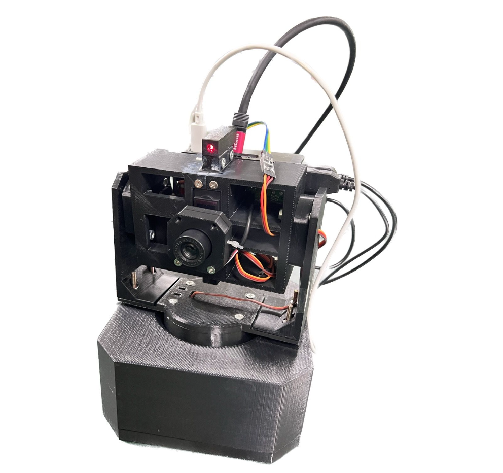
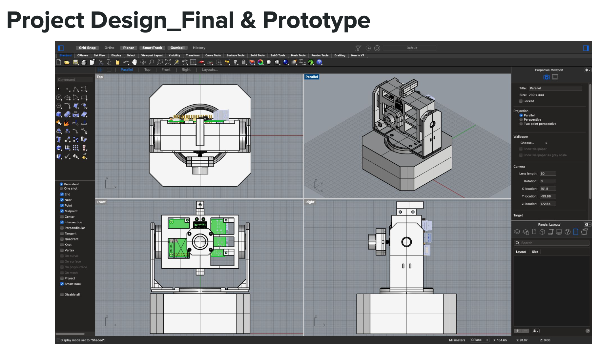
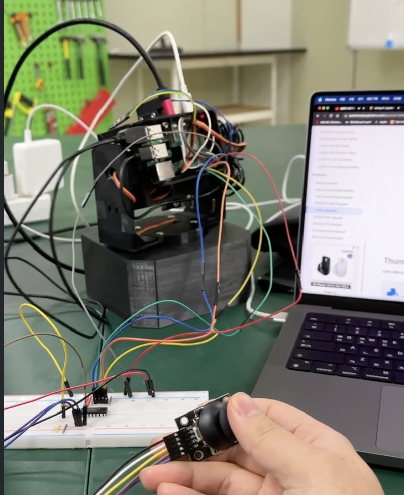

Senior Capstone Design Project · MEC 441/442


Key objectives of the project:

Several engineering challenges were encountered during development. Low camera resolution affected tracking accuracy, and wire tangling during rotation was a persistent mechanical issue. Multiple concept designs were evaluated to resolve the wire management problem.
The initial objective was to achieve full 3DoF motion, but the roll axis rotation could not be successfully implemented due to unsolved wire tangling — resulting in a 2DoF (pan + tilt) final design. The lessons learned informed the follow-up research project (Project 4) on image recognition-based 3D object detection.
For more detailed information, you can view the full project report: